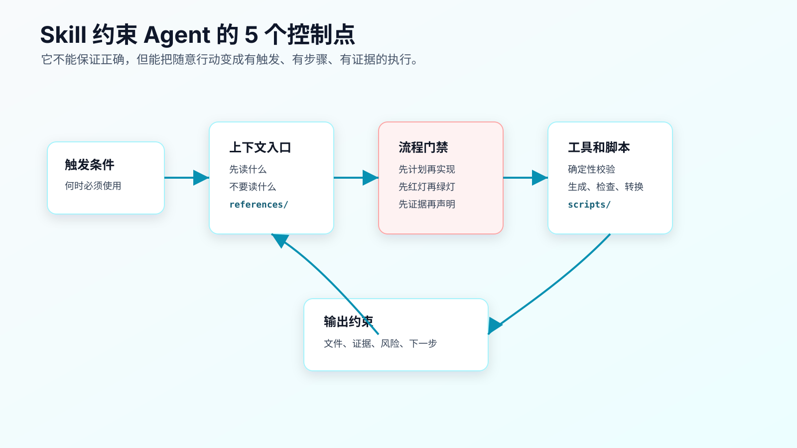
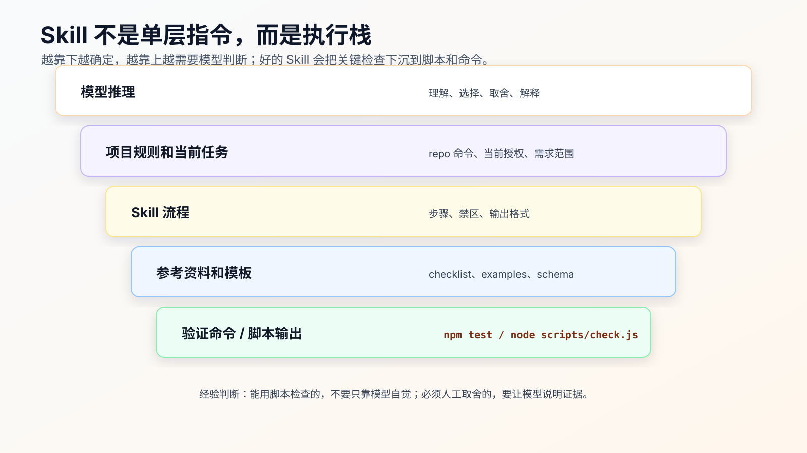

Skill 原理解析：它如何约束 Agent 行为
Skill 不能让 AI 变成不会犯错的程序员。
它能做的，是减少 Agent 的自由发挥空间。
一个没有 Skill 的 Agent，拿到任务后通常靠当前 prompt、上下文、模型习惯和工具反馈行动。它可能先写代码，也可能先读文件；可能先跑测试，也可能直接总结；可能遇到失败就排查，也可能补一个看似合理的判断。
Skill 的作用，是在某类任务出现时，把 Agent 拉进一条固定轨道：
什么时候触发
先读什么
先做什么
哪些事不能做
什么时候必须停
要运行什么检查
最后如何报告证据
所以 Skill 的原理不是“提示词更长”，而是给 Agent 增加控制点。

第一个控制点：触发条件
Skill 的第一层约束，是触发。
如果触发条件写得好，Agent 会在正确场景下进入正确流程。
比如调试类 Skill 的触发条件可以是：
Use when encountering a bug, test failure, CI failure, or unexpected runtime behavior before proposing fixes.
这里有两个关键信息：
- 场景：bug、测试失败、CI 失败、异常行为。
- 时机：提出修复之前。
这会阻止 Agent 看到报错就直接修。
触发条件写坏，Skill 就会失效。
坏写法：
Use this skill for better engineering quality.
这个范围太大，几乎等于没写。Agent 不知道何时必须用，也不知道什么时候不用。
Skill 的 description 应该像函数签名一样精确：
输入场景是什么
触发时间是什么
任务边界是什么
对 AI Coding 来说，触发条件越具体，越能减少误用。
第二个控制点：上下文入口
Skill 还能规定 Agent 先读什么。
同一个任务，如果上下文入口错了，后面的推理都会偏。
例如 review Skill 可以要求：
Before reviewing:
- read the task goal.
- inspect the diff.
- inspect relevant tests.
- do not summarize before listing findings.
调试 Skill 可以要求：
Before proposing fixes:
- read the full error output.
- identify the first failing line.
- trace the value source.
- inspect recent diff.
这不是格式要求，而是上下文控制。
没有这个控制，Agent 可能只读最后一行错误，只看当前打开文件，或者根据常见模式猜原因。
Skill 可以把“先读什么”写成入口，让 Agent 每次先看指定材料。
第三个控制点：流程门禁
好的 Skill 会设置门禁。
门禁不是口号，而是阶段顺序。
例如 TDD：
先写失败测试
确认测试按预期失败
再写最小实现
确认测试通过
再考虑重构
例如验证完成：
先确定要证明什么
运行命令
读取输出
确认退出码和失败数量
再声明结果
例如复杂需求：
先写计划
人审计划
只授权当前步骤
完成后停止
这些门禁会改变 Agent 的执行节奏。
没有门禁时，Agent 会倾向于一次性完成任务。门禁把任务切成可审查阶段。
Superpowers 这类框架之所以值得研究，不是因为它的文字更强，而是它把 brainstorming、TDD、systematic debugging、verification-before-completion、code review 等环节做成了一组可触发的流程门禁。
这背后的工程价值是：把“希望 Agent 自觉”变成“Agent 每次都要走流程”。
第四个控制点：参考资料
Skill 可以把稳定知识放进 references。
例如：
references/
├── failure-classification.md
├── review-severity.md
└── verification-ledger-template.md
这比把所有规则塞进 SKILL.md 更好。
入口文件只写流程和路由，细节资料按需读取。
这样有三个好处：
- 减少主指令噪音。
- 让长资料可维护。
- 让 Agent 在需要时读取具体参考，而不是每次吞下全部内容。
但 reference 也有边界。
它适合放稳定模板、检查清单、案例、术语说明。
不适合放当前项目路径、当前任务结论、某次任务里的临时取舍、过时工具能力。
如果 reference 过期，Skill 会稳定地产生过期行为。
第五个控制点：脚本和确定性校验
Skill 最容易被低估的部分，是 scripts。
能用脚本检查的东西，不要只靠模型自觉。
比如验证记录是否包含必要段落、命令块、通过信号，可以用脚本检查。
比如 Markdown 链接是否能访问，可以用脚本检查。
比如生成的配置是否符合 schema，可以用脚本检查。
模型擅长理解和取舍，但不适合做机械一致性检查。
一个成熟 Skill 应该尽量把确定性检查下沉到脚本：
模型负责判断：
- 哪些证据相关。
- 哪些风险需要说明。
- 当前任务是否越界。
脚本负责检查：
- 文件结构是否存在。
- 必要字段是否齐全。
- 命令输出是否包含 pass/fail。
- 生成格式是否有效。

所以 Skill 不该只停在一个 .md 文件。最小 Skill 可以只有说明，但高价值 Skill 往往会逐步长出脚本。
第六个控制点：输出约束
Skill 还要规定输出。
没有输出约束，Agent 可能执行了流程，但最后只给你一句：
已完成。
这对工程没有价值。
验证类 Skill 的输出应该包含：
Completion status
Changed files
Commands run
Command results
Failures
Residual risk
What was not verified
代码审查类 Skill 的输出应该包含：
Findings first
Severity
File and line
Why it matters
Suggested fix only when useful
Tests not run
调试类 Skill 的输出应该包含：
Reproduction
Evidence
Hypothesis
Minimal verification
Root cause
Fix
Verification
Residual risk
输出约束的作用，是让人能审。
AI Coding 不是让 Agent 自己满意，而是让人能判断它做得对不对。
第七个控制点：停止条件
很多 Skill 只写“应该怎么做”，没有写“什么时候不能继续”。
这会留下一个大洞。
AI Coding 里最危险的行为，往往发生在信息不够时：
需求边界不清，继续实现。
复现失败，继续猜原因。
测试命令找不到，继续说已验证。
工具不可用，继续编一个结论。
改动会影响 public API，但没有停下来确认。
停止条件要写得硬。
例如调试 Skill 可以写：
Stop if:
- the failure cannot be reproduced after two focused attempts.
- the proposed fix changes public API, schema, or persistence behavior not mentioned in the task.
- the failure may be baseline but no baseline evidence has been collected.
代码审查 Skill 可以写：
Stop and report missing context if:
- no diff is available.
- no task goal is provided.
- line references cannot be produced.
停止不是让 Agent 放弃，而是避免它在证据不足时继续扩大错误。
一个 Skill 如果没有 stop conditions，只能算流程建议，还不能算工程约束。
Skill 不能替代工具权限
Skill 只是指令和资源。
它不能凭空获得权限，也不能绕过工具限制。
如果一个 Skill 说“查询生产数据库”，但当前环境没有只读数据库工具，Agent 不能真的查询。
如果一个 Skill 说“打开浏览器验证”，但当前会话没有浏览器能力，它只能说明无法执行，不能伪造结果。
这点要写清楚。
例如：
If the required tool is unavailable, report the missing tool and provide the next best local verification. Do not claim the unavailable verification was performed.
好的 Skill 应该约束证据口径：
没有运行，就说没有运行。
不能访问，就说不能访问。
只有推断，就标明推断。
否则 Skill 会让错误结论看起来像按流程得出的结果。
Skill 的执行证据怎么审
审一个 Skill 是否被正确执行，不要看 Agent 有没有提到 Skill 名称。
要看证据。
例如 review Skill 执行得好，输出里应该有：
任务目标。
diff 范围。
检查过的文件。
按严重程度排序的 finding。
文件和行号。
没有运行的测试。
open questions。
如果输出只是：
我已经根据 review skill 检查过，整体没问题。
这等于没审。
调试 Skill 也是一样。
有效证据应该包括：
复现命令。
完整错误的关键行。
最小假设。
验证这个假设的动作。
根因和修复之间的对应关系。
修复后的回归命令。
没有这些证据，Skill 就没有提供可审查价值。
程序员审 Skill 执行结果时，可以用一个短问题：
如果我不相信 Agent 的结论，只看它给出的证据，能不能复查到同样判断？
能，就说明 Skill 输出可用。
不能，就让 Agent 补证据，而不是继续下一步。
Skill 也不能替代人工判断
Skill 可以要求 Agent 先做计划，但计划是否合理仍然需要人审。
Skill 可以要求 Agent 写失败测试，但测试是否覆盖业务风险仍然需要人审。
Skill 可以要求 Agent 输出验证记录，但残余风险是否可接受仍然需要人判断。
所以 Skill 的定位应该是：
提高流程一致性
减少遗漏
暴露证据
降低重复沟通成本
而不是：
自动保证质量
自动替代评审
自动做完交付
一旦把 Skill 当作质量保证本身，就会过度信任工具。
一个反例：坏 Skill 怎么误导 Agent
坏 Skill：
---
name: complete-task
description: Use for all coding tasks.
---
# Complete Task
Always implement the requested feature cleanly.
Make sure code quality is high.
Run tests if needed.
Summarize what you did.
这个 Skill 几乎没有价值。
问题在于：
- 触发条件太宽。
- 没有上下文入口。
- 没有阶段门禁。
- 没有禁止事项。
- 没有具体验证命令。
- 没有输出证据结构。
- “if needed” 给了模型逃避空间。
改成有约束的写法：
---
name: focused-change-execution
description: Use when executing an approved implementation task that should produce a small reviewable diff.
---
# Focused Change Execution
## Before Editing
- Read the approved task.
- List allowed files and forbidden changes.
- Identify the focused verification command.
- Stop if required files are outside the approved scope.
## During Editing
- Execute only the current task.
- Do not perform unrelated refactoring.
- Do not change public API shape unless explicitly authorized.
- Do not start the next task.
## After Editing
- Report changed files.
- Run the focused verification command.
- Report command output.
- State residual risk.
这才像一个可执行工作流。
约束不是越多越好
Skill 里的约束要服务任务风险。
如果一个 Skill 对所有任务都要求计划、TDD、review、全量测试，它会让小任务变慢，也会让 Agent 在不需要的地方加载大量上下文。
更合理的写法是分层触发：
Low risk:
- typo、文案、小配置，不触发完整流程。
Medium risk:
- 单模块行为改动，触发 plan-first 和 focused verification。
High risk:
- 状态机、权限、支付、持久化、跨模块改动，触发 SDD/TDD/debug/review/verification 链路。
Skill 的职责是让风险和流程匹配，而不是让所有事情都重流程。
如果一个 Skill 触发太频繁，程序员会开始忽略它。忽略几次后，它就失去约束力。
Skill 之间会冲突
一个任务可能同时命中多个 Skill。
例如修一个测试失败：
- Debug Skill 想先复现、找根因。
- TDD Skill 想先写失败测试。
- Small diff Skill 想限制文件范围。
- Verification Skill 想完成前检查证据。
这些不一定冲突，但必须有主次。
可以写成：
Primary workflow:
- systematic-debugging for root cause.
Supporting constraints:
- focused-change-execution for small diff.
- verification-before-completion before completion claim.
不要让多个 Skill 同时定义 source of truth。
任务主线只能有一条：当前是调试、实现、review，还是验证？主线确定后，其他 Skill 只能提供约束，不能抢流程。
这也是为什么项目规则里要写清楚：当用户给出更具体的 spec、plan 或 task 时，以当前 task 为准，Skill 服务于当前 task。
一个实际排序例子：
场景：实现过程中测试失败。
Primary:
- systematic-debugging，先确定失败是不是当前 diff 引入。
Supporting:
- focused-change-execution，限制修复文件范围。
- verification-before-completion，修复后要求新鲜验证。
Not primary:
- test-driven-development，此时已经进入调试，不重新启动 TDD 流程。
如果主线不清，Agent 可能一边调试、一边补测试、一边重构，最后又回到大 diff。
Skill 越多，越需要主线排序。
工具不可用时，Skill 也要给出口径
生产任务里经常会遇到工具不可用。
浏览器起不来，日志工具没有权限，MCP server 超时，测试环境缺变量。
这时 Skill 不能只写“使用某某工具验证”。它还要规定不可用时怎么说。
正确输出应该像这样：
Verification not performed:
- required tool: browser preview
- reason: dev server failed to start, missing DATABASE_URL
- fallback used: component tests only
- risk: real browser interaction and network request not verified
错误输出是：
页面应该可以正常工作。
前者能让人判断风险，后者只是猜。
所以验证类 Skill、MCP 类 Skill、前端检查 Skill 都要有 unavailable 分支。
只写成功路径的 Skill，在真实工程里不够用。
reference 和 scripts 也会过期
Skill 的入口文件会过期，reference 和 scripts 也会。
reference 过期的表现通常是：
引用旧工具命令。
保留已经废弃的 API。
把旧项目里的目录当成通用规则。
示例输出和当前工具不一致。
scripts 过期的表现更隐蔽：
检查字段和新模板不匹配。
把合法的新格式判成失败。
只检查结构，不检查关键证据。
依赖旧 Node/Python 版本。
所以成熟 Skill 应该有自检。
最简单的办法是给 Skill 准备两个样例：
examples/pass.md
examples/fail.md
再让脚本跑：
node scripts/check-ledger.js examples/pass.md
node scripts/check-ledger.js examples/fail.md
pass 样例应该通过，fail 样例应该失败，并且失败原因要准确。
这不是为了把 Skill 做成软件项目，而是为了防止一个已经过期的检查器继续给 Agent 提供错误约束。
Skill 的失败模式
Skill 也会失败，而且失败方式很隐蔽。
第一种，触发失败。
任务明明是 CI 失败，调试 Skill 没触发。通常是 description 没写到 CI failure，或者触发时机没写“before proposing fixes”。
第二种，执行失败。
Skill 触发了，但 Agent 仍然直接改代码。通常是停止条件太软，或者输出没有要求复现证据。
第三种，过度触发。
改 typo 也触发完整调试流程。说明 description 太宽，或者没有写 do not use。
第四种，资料过期。
reference 里写了旧工具命令，Agent 稳定执行过期步骤。
第五种，冲突失败。
多个 Skill 同时定义流程，Agent 不知道以哪个为准。
所以维护 Skill 时，要看失败属于哪一类。
不要一失败就加更多文字。先判断是触发、流程、资料、输出还是冲突问题。
怎么测试一个 Skill 是否有效
Skill 写完后，要用真实任务试。
可以看四个结果：
它有没有在正确场景触发。
如果调试任务没有触发调试流程，description 可能太弱。
它有没有改变 Agent 行为。
如果 Agent 仍然直接修、不复现、不跑验证，流程门禁写得不够硬。
它有没有减少遗漏。
比如每次都能报告 changed files、commands、residual risk。
它有没有制造新负担。
如果小任务也被迫走长流程，Skill 触发范围太大。
不要只测试 happy path。
故意给一个测试失败，让调试 Skill 触发；给一个没有验证记录的完成声明，让验证 Skill 拦住；给一个需要 TDD 的行为改动，看它是否先要求失败测试。
Skill 的维护成本
Skill 是资产，也是负债。
它需要维护：
- 工具命令变化。
- 官方文档变化。
- 项目实践变化。
- 模板和脚本 bug。
- 触发条件过宽或过窄。
所以不要无限增加 Skill。
建议定期做三件事：
删除低频 Skill
合并重复 Skill
把有效规则沉淀到脚本或模板
如果一个 Skill 三个月没有触发，或者每次触发都要人工纠正，它可能不值得保留。
常见错误
错误一：把 Skill 当成绝对约束。
Skill 是指令和工作流，不是形式化证明。最终还要看工具执行和证据。
错误二：只写原则，不写步骤。
“保持高质量”没有用。要写先做什么、禁止什么、怎么验证。
错误三：没有停止条件。
Agent 遇到范围扩大、工具缺失、验证失败时必须知道何时停。
错误四：不使用脚本。
所有检查都靠模型，会增加遗漏。能确定性校验的地方应下沉到脚本。
错误五：输出不可审查。
没有 changed files、commands、results、risk，就无法判断执行质量。
错误六：触发范围太大。
所有任务都触发同一个 Skill，会让流程变重，也会产生上下文噪音。
改完后重点看什么
评估一个 Skill，不看它写得多完整。
看这些结果：
- 触发是否准确。
- 是否减少 Agent 直接行动。
- 是否把关键阶段拆开。
- 是否要求读取正确上下文。
- 是否使用确定性脚本或命令。
- 是否输出可审查证据。
- 是否明确无法验证时的口径。
好的 Skill 不是让 AI “更聪明”，而是让它少走你已经知道不可靠的路。
常见问题
Skill 能不能强制 Agent 一定照做？
不能从工程上绝对保证。它能提高触发和执行一致性，但仍要用 diff、测试、脚本和人工审查验证。
Skill 里要不要写很多硬性用语？
只在关键门禁处写硬规则。泛泛的强硬措辞没有意义。硬规则必须能对应行为和检查。
脚本是不是必须有？
不是。最小 Skill 可以没有脚本。但当检查能被程序化时，脚本比模型自查可靠。
Skill 会不会污染上下文？
会。触发条件过宽、references 太大、内容过期，都会污染上下文。所以要精简、分层、按需读取。
Skill 和多 Agent 有什么关系？
Skill 规定怎么做，多 Agent 规定谁去做、在哪个上下文做。多 Agent 任务也需要 Skill 约束，否则只是并行放大错误。
可复查资料
- OpenAI Codex Agent Skills：https://developers.openai.com/codex/skills
- Anthropic Claude Code Skills：https://code.claude.com/docs/en/skills
- Superpowers GitHub 仓库：https://github.com/obra/superpowers
- Superpowers
test-driven-development：https://github.com/obra/superpowers/blob/main/skills/test-driven-development/SKILL.md - Superpowers
verification-before-completion：https://github.com/obra/superpowers/blob/main/skills/verification-before-completion/SKILL.md